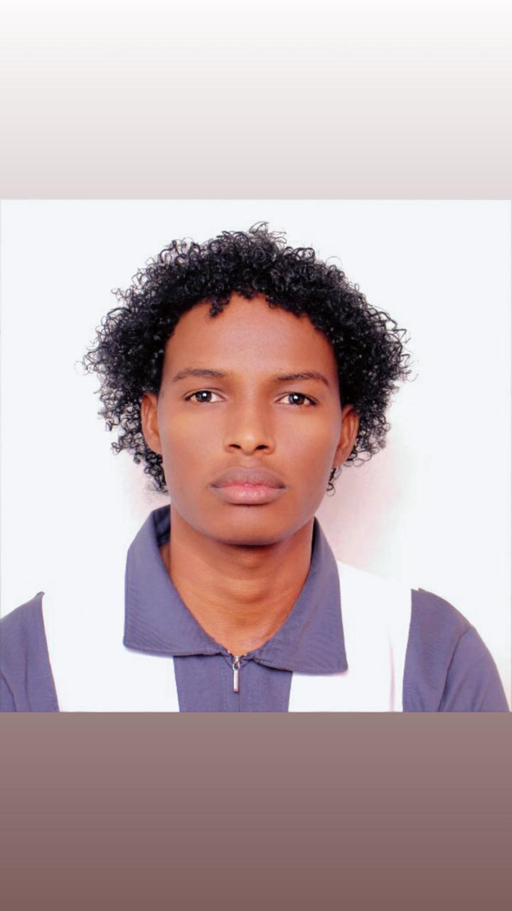

Multilingual Translator | Interpreter | Subtitling & Localization Specialist | Applied Computer Technology | BBA
I am a multilingual translator, interpreter, and digital specialist with 8+ years of experience supporting NGOs, UN agencies, and global clients. Fluent in English, Somali, Swahili, and Arabic, I deliver translation, interpretation, subtitling, and tech-driven solutions with cultural precision and technical efficiency.
Translation of humanitarian forms & guidelines in Somali and Swahili, ensuring compliance & cultural accuracy.
Translated patient instructions and medical documents, delivering clear and culturally sensitive content.
Subtitled & translated educational videos for multilingual audiences with enhanced accessibility.
Localized web content for refugee platforms and integrated translations with CMS tools.
Email: mohamedabukar043@gmail.com
LinkedIn: linkedin.com/in/mohamed-abdisalan
GitHub: github.com/mabdisalan